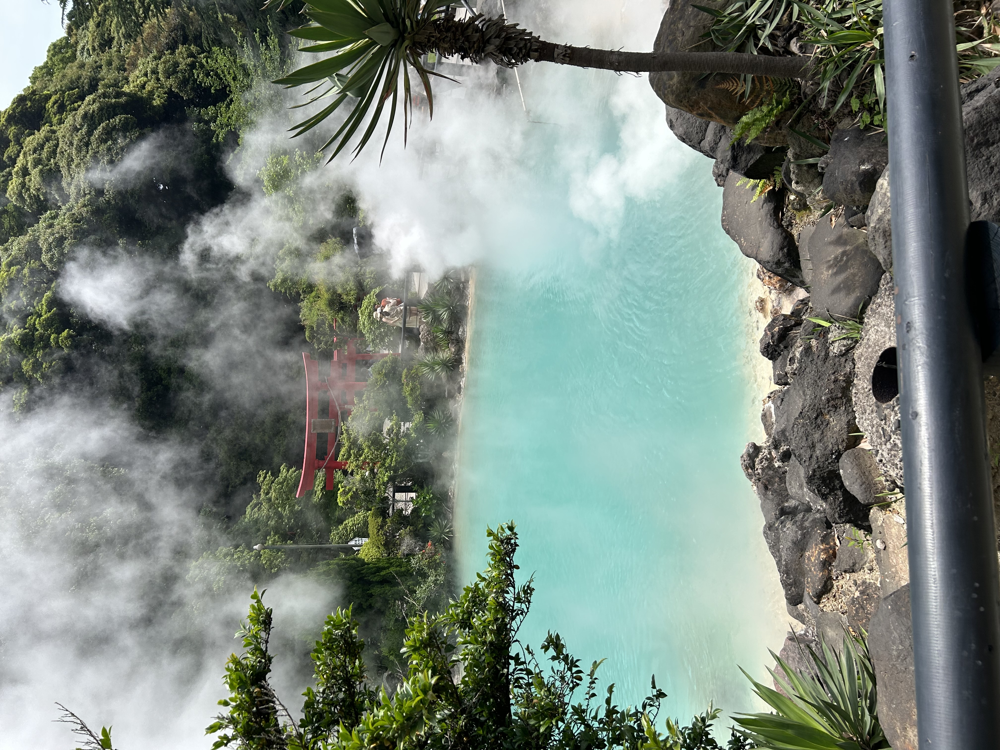

Localizada na província de Ōita, a cidade de Beppu é um dos destinos termais mais famosos do Japão, reconhecida nacioalmente por seus onsens (fontes de águas termais). Com cerca de 2.800 fontes, Beppu oferece uma grande variedade de experiências.
Cercada por montanhas e pelo mar, a cidade combina paisagens naturais únicas com uma forte tradição cultural. Entre seus principais atrativos estão os “Jigoku” (Infernos de Beppu), fontes termais de cores vibrantes voltadas para visitação, e o Jigoku Mushi, uma técnica culinária que utiliza o vapor natural para preparar alimentos.

As águas termais, conhecidas como onsen, são uma das experiências mais tradicionais do Japão. Ricas em minerais como enxofre, ferro e bicarbonato, trazem diversos benefícios: relaxamento, melhora da circulação, alívio de dores musculares
e cuidados com a pele.
Sua popularização se deu
Cidade mais famosa do Japão por seus onsens
Culinária no vapor das águas termais
Tradições e estilo de vida
Pontos e experiências únicas
Beppu oferece muito mais do que turismo: é uma vivência cultural profunda ligada ao bem-estar, tradição e natureza.
Respeito, disciplina e harmonia fazem parte do dia a dia japonês.
Águas termais com propriedades relaxantes e terapêuticas.
Explore paisagens, fontes termais e cultura local.
Alimentos cozidos naturalmente com vapor vulcânico.